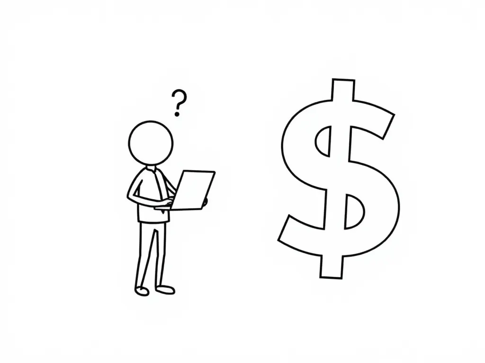
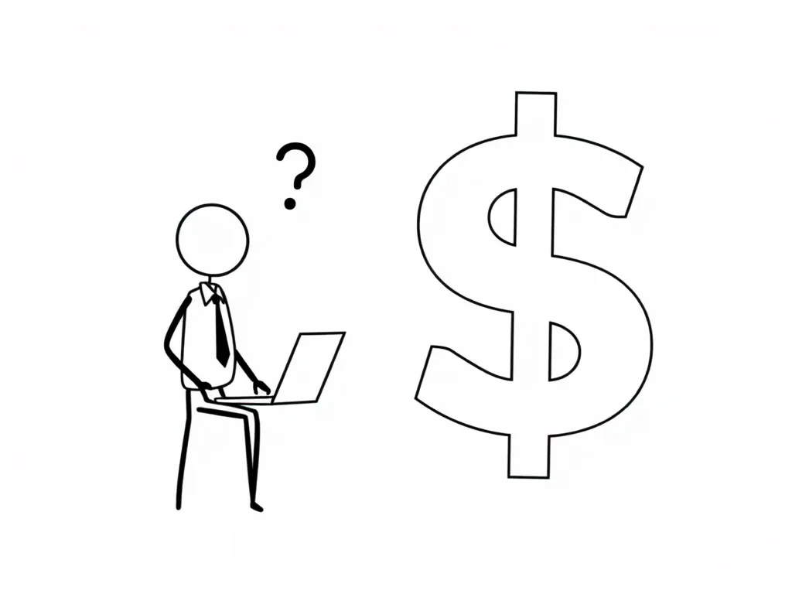
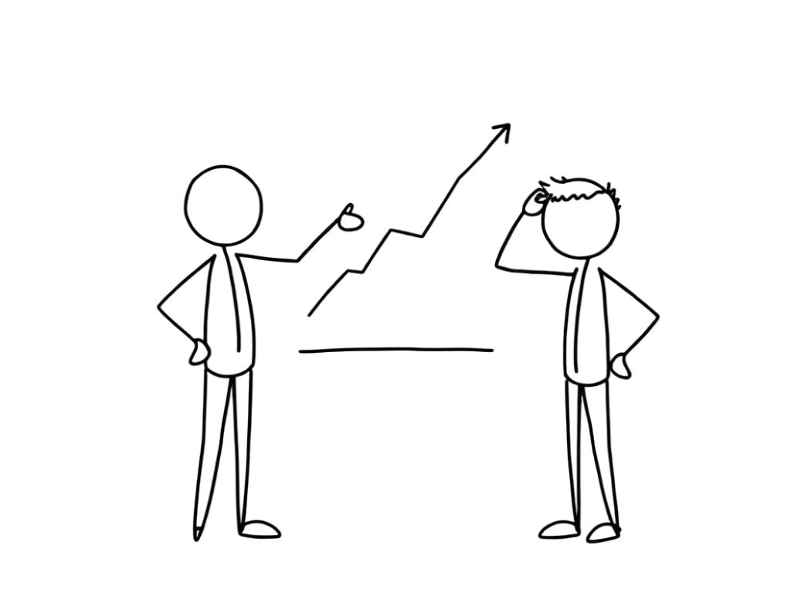
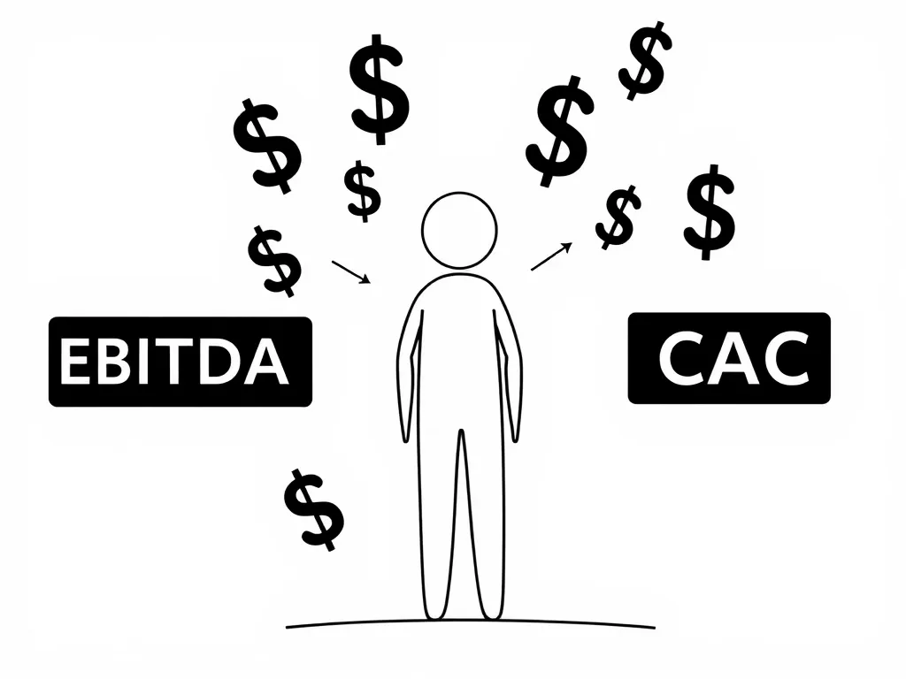
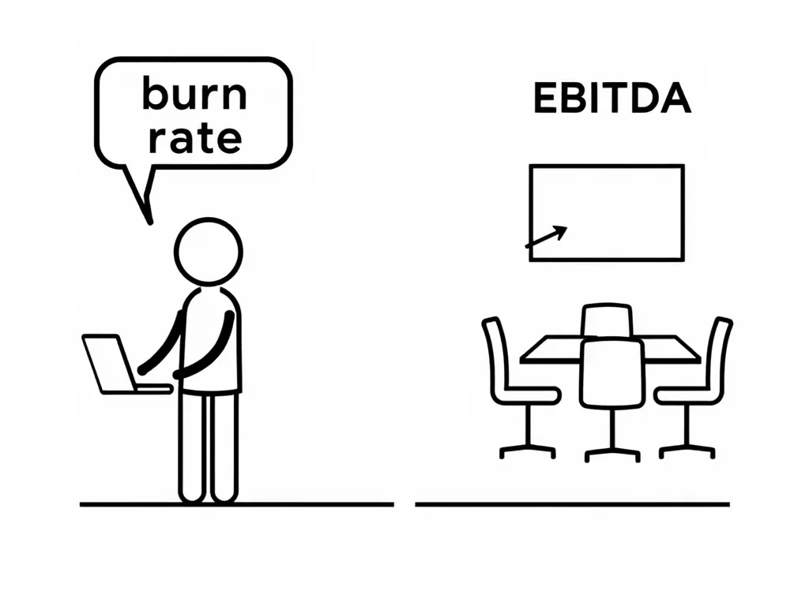
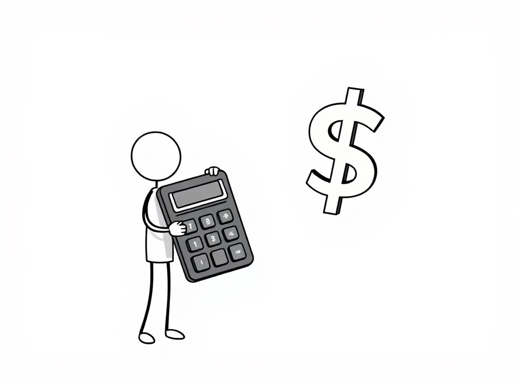

*Sorry for the delay. Life got in the way the past few days. Better late than never.*
You're in a meeting with the business people. You're ready to talk about your team's technical achievements. Then someone says: "We need to focus on EBITDA this quarter" or "Our CAC is too high."
Your brain goes:
"What?"
"Is CAC some new AWS service?"
If you know nothing about business terms this probably already happened to you.
Why These Terms Matter Now 💼

I get it. A few years back, I thought knowing terms like "MVP" and "KPI" was enough. I was wrong.
As you grow in your career, especially moving towards staff+ or engineering management roles, you'll encounter a whole new dictionary of terms that actually move business decisions.
Understanding business terms isn't about becoming a “suit” executive.
It's about:
Making better technical decisions 🤔
Getting your ideas approved faster ✅
Understanding the "why" behind project priorities 🎯
Speaking the same language as stakeholders 🗣️
Career growth (yes, even as an IC) 📈
Ever wondered why that critical refactoring got denied, but some new shiny feature got instant approval? Or why your perfectly scalable architecture proposal was denied in favor of a "quick fix"?
The answer often lies in understanding the business side of things.
The Reality Check 🌟
After years in engineering, here's what I've noticed:
Technical expertise alone doesn't get projects approved.
Most engineering initiatives die in planning meetings not because they're technically wrong, but because engineers can't explain their business value.
You see this everywhere:
Critical refactoring project gets denied
Your infrastructure upgrade keeps getting postponed
Your team's headcount request gets rejected
The "quick temporary fix" wins over your scalable solution
Why? The lack of ability to translate tech needs into business value.
This is why understanding business terms matters. Not to sound smart in meetings, but to fight for what your team actually needs.
The Essential Business Dictionary for Engineers 📚

Let's break some examples that we might encounter in meetings:
The Money Game 💰
EBITDA (Earnings Before Interest, Taxes, Depreciation, and Amortization)
What it means: How much money the company really makes from its core business
Engineer translation: "The money we make excluding some expenses"
Why you should care: This often determines if you get that extra headcount or that new tool you wanted.
Burn Rate and Runway
What it means: How fast we're spending money and how long until we run out
Engineer translation: "We are spending too much. We need to optimize cloud costs. "
Why you should care: Affects technical decisions about scaling, infrastructure, and features, etc..
Revenue
What it means: Money we make from our customers before any expenses
Engineer translation: "All the money coming in"
Why you should care:
If your project gets approved
How many engineers we can hire
Which features to build first
Gross Margin
What it means: Revenue - cost of goods sold, as a percentage
Engineer translation: "The percentage of money we keep after paying for our core service costs"
Why you should care: Influences decisions about infrastructure optimization and system architecture, features, etc..
P&L (Profit & Loss)
What it means: A financial statement that shows revenue, costs, and expenses over a period
Engineer translation: "The number that shows if we're winning or losing money"
Why you should care: This drives most technical investment decisions
The Growth Game 📈
CAC (Customer Acquisition Cost)
What it means: How much we spend to get one new customer
Engineer translation: "Why we need to make onboarding easier"
Why you should care: The system or features should not be complex.
LTV (Customer Lifetime Value)
What it means: How much money we expect to make from one customer
Engineer translation: "Why we care more about some customer’s feature requests than others"
Why you should care: Influences which features or optimizations get done first
These are just some of the simplest terms to start. There are many more.
When Business Terms Hit Engineering World 👨💻
These terms usually appear when:
Your team wants resources (people, tools, infrastructure)
You're proposing major technical changes
Feature Priority discussions
Budget season arrives
Company is planning next year objectives
Speaking Both Languages 🔄
When you understand business terms, you can pitch technical needs differently:
Instead of: "We need to refactor this service"
We can try: "This refactoring will reduce our burn rate by optimizing our cloud resource usage by 25%"
Instead of: "We should implement caching"
We can try: "Adding caching will improve customer retention by making the app 3x faster, directly impacting our LTV"
Numbers matter for biz people.
Startup vs Enterprise: The Language Differs 🏢

The terms you'll hear depend on your company's stage.
As an example:
Startups focus more on:
Burn rate and runway
Growth metrics (CAC, LTV)
Market size
Enterprises care more about:
EBITDA and operating margins
Cost optimization
Return on investment (ROI)
When NOT to Use These Terms 🚫
Understanding business terms is important, but using them incorrectly can bring more harm than good.
Don't use them in technical discussions with your team: It adds unnecessary complexity.
Avoid using them if you're not 100% sure what they mean. Learn them first.
Don't throw them around just to sound smart. It's obvious and counterproductive.
The Bottom Line 💡

Remember:
You don't need to become a business expert
You do need to understand enough to make your technical case heard
Every term you learn is a new tool that you can use
Business is complex
The best engineers aren't just great at code.
They're good at understanding why they're writing that code.
Until Next Time 😎
Got thoughts? Questions? Just want to say hi? I'm all ears! You can find me on the professional network (LinkedIn) or the digital playground (Twitter).
I'm always up for a chat and promise to get back to everyone. After all, the best part of writing is the conversations it starts.